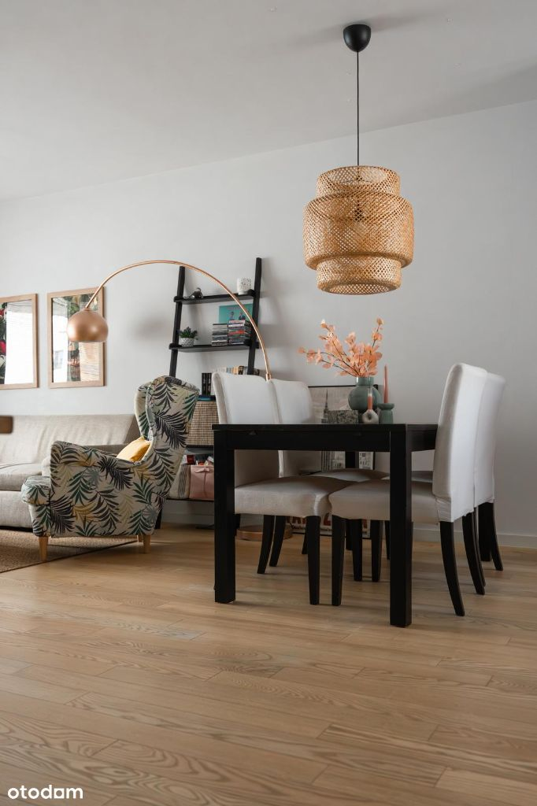

Dzień dobry,
Z przyjemnością przedstawiamy Państwu nasze 3 pokojowe mieszkanie położone na uroczym, rodzinnym, warszawskim osiedlu Wilno.
Mieszkanie zakupiliśmy jak jeszcze było „dziurą w ziemi”, a wprowadziliśmy się do niego tuż po całkowicie bezproblemowym odbiorze w 2018 roku.
Mieszkanie znajduje się na 2 piętrze czterokondygnacyjnego, strzeżonego, niewielkiego bloku w kształcie litery „U”, który zamykany jest 3 furtkami (jedna z nich z bezpiecznym wjazdem dla wózków). Każda klatka ma swoja windę i swoje wejście do podziemnego garażu. W naszej klatce znajduje się 16 mieszkań.
Na 72 m mamy:
-salon – 22 m z otwartą kuchnią – 8 m
(w planach kuchnia była oddzielna od salonu, więc taki układ też jak najbardziej możliwy)
-naszą sypialnie – 11 m
-sypialnie dzieci – 11 m
-łazienkę z wanna i prysznicem – 4.6 m
-garderobę
-toaletę wraz z „mini pralnią”
-przedpokój
+ loggie
Ponad to posiadamy też miejsce postojowe w garażu z bardzo przestronnym i pojemnym boxem. Jest na to oddzielny akt notarialny. Koszt miejsca z dużym boxem to dodatkowo 59 tys zł.
Mieszkanie to nasza parełka. Urządzaliśmy je sami, dbając o każdy szczegół.
Na podłodze w salonie, kuchni, garderobie i przedpokoju położyliśmy deskę jesionową olejowaną. Dodatkowo olejowaliśmy ją raz jeszcze po roku użytkowania, aby służyła długie lata. Obie łazienki wyłożyliśmy wysokogatunkową glazurą. Jest bardzo łatwa w utrzymaniu czystości. Podłoga w sypialniach to wysokogatunkowa wykładzina antyalergiczna. Było to bardzo istotne w wyborze ponieważ jestem alergiczką. Dodatkowo 2-3 razy do roku była odkurzana specjalnym odkurzaczem i odświeżana. W zasadzie jest w stanie idealnym. Pod wykładziną wyłożyliśmy matę wygłaszającą dzięki czemu jest miękko i miło.
Łazienki wyposażyliśmy w armaturę firmy Paffoni oraz ceramikę Villeroy and Boch. Szyba zamontowana w większej łazience jest bardzo mocna, wysokiej jakości. W dużej łazience zrobiliśmy także ogrzewanie podłogowe, które uruchamiamy kiedy chcemy pilotem przy wejściu. Nagrzewa się dość szybko. Mała łazienka mieści pralkę z suszarką i ogromna szafkę po sufit. Możliwe jest także umieszczenie tam suszarki bębnowej.
Sypialnie są bardzo ustawne. Gościły przeróżne ustawienia łóżeczek niemowlęcych i przewijaków w różnych kombinacjach. Wyposażone są w bardzo pojemne szafy pax 200/236 cm.
Salon wyposażyliśmy przede wszystkim w zaprojektowaną do naszych potrzeb zabudowę. Jest w niej mnóstwo miejsca do przechowywania (3 ogromne szuflady pod tv) i 6 naprawdę pojemnych szafek na górze. Zrobione na zamówienie przez stolarza. Drewniane blaty i półki, umieszczone na malowanych proszkowo, stalowych wspornikach. Na co dzień służą jako bardzo wygodne domowe biuro. Biurko ma 2 metry długości.
Kuchnia wykonana została przez stolarza, blat to 3 krotnie olejowany jesion. Sprzęty: zmywarka Bosch, lodówka Samsung, okap Smeg, piekarnik Amica, płyta grzewcza szersza – Elektrolux. Nad blatem w kuchni znajdują się stylowe i bardzo łatwe do utrzymania czystości płytki Raw Decor. Zlew firmy Bianco.
W garderobie zrobiliśmy bardzo funkcjonalną zabudowę. Mimo że na pierwszy rzut oka jest mała, naprawdę jest niezwykle pojemna. Trzymamy tam rowery dla dzieci, wózek, walizki, 2 odkurzacze i jeszcze milion innych rzeczy.
Na balkonie położyliśmy wysokiej jakości sztuczną trawkę. Jest miękka i łatwa w utrzymaniu czystości. Wystarczy ją raz na jakiś czas odkurzyć.
Okna wychodzą na obie strony bloku dzięki czemu mieszkanie jest jasne i bardzo łatwo je przewietrzyć. Jednocześnie, dzięki usytuowaniu jest ciepłe w zimą i nie wymaga dużych nakładów grzewczych.
Drzwi wewnętrzne i listwy przypodłogowe są drewniane, w kolorze bieli. Robiliśmy je na zamówienie u stolarza.
Wszystkie ściany są białe, w zeszłym roku odświeżaliśmy obie sypialnie i korytarz. Używaliśmy farb zmywalnych.
Większość wyposażenia mieszkania zostawiamy. Także mebli i oświetlenia (do ustalenia).
Za co jeszcze kochamy to mieszkanie? Jest ultracicho, ciepło, słońce zagląda do nas przez okno balkonowe rano, dzieciaki mogą wyjść na patio – blok tworzy zamkniętą całość, jest bezpiecznie. Wokół jest bardzo dużo zieleni. Nie sposób nie wspomnieć też o wspaniałych, przyjaznych i zawsze pomocnych sąsiadach.
Za co kochamy to osiedle? Bardzo łatwy dojazd – zarówno do s8 jak i do centrum. Codziennie rano dojeżdżamy na Żoliborz. Nie ma z tym żadnego problemu, zajmuje nam to ok 25 min. Komunikacja miejska jest naprawdę bardzo przyjazna. Z naszego bloku spacerkiem do pociągu jest jakieś 7 min, do przystanku autobusowego linii 156,170,356 i N16 ok 5 min. Pociągi są bardzo często, autobusy dojeżdżają do pobliskich stacji metra.
W zasadzie wszystko znajduje się „na miejscu”: przedszkola, żłobki, sklepy (Żabki, Rossman, Pepco), przychodnia z usługami NFZ oraz badania laboratoryjne, apteki, piekarnie, warzywniak itd. Bardzo fajnie jest też z usługami gasto z dowozem. Jest gdzie pospacerować, gdzie spotkać się ze znajomymi, w pobliżu jest Zalew Baradowskiego – idealny do uprawiania sportów wodnych latem i wypoczynku, staw z kaczkami, siłownie, salony kosmetyczne i inne.
W mieszkaniu zostawiamy cudowne wspomnienia i piękny czas. My ruszamy w kolejny etap. Jeśli jesteś zainteresowany zakupem - zapraszamy na kawę i obejrzenie mieszkania
